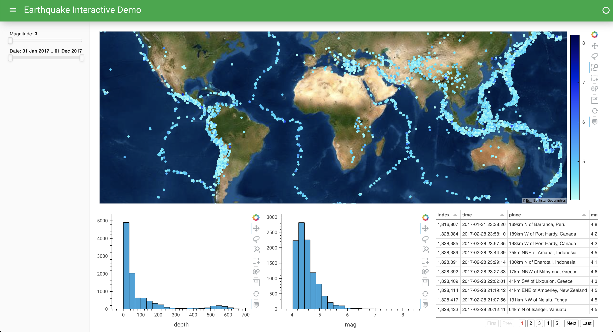

HoloViz Tutorial#
Welcome to HoloViz tutorial! In this tutorial, you will make an interactive dashboard like in the image below. You will go through the steps involved in exploring data of different types and sizes, building simple and complex figures, adding interactive behavior and widgets, and deploying full applications. While the tutorial dataset describes earthquake events, the same principles that you will employ in this tutorial can be used for visualization tasks across any domain.
We’ll be using a wide range of open-source Python libraries, but focusing on the tools we help maintain as part of the HoloViz project, which include: Panel, hvPlot, HoloViews, GeoViews, Datashader, Lumen, Param, and Colorcet.
This notebook serves as the homepage of the tutorial, including a table of contents letting you launch each tutorial section.
Index and Schedule#
Introduction and setup
The
.plotAPI: a data-centric approach to visualization30 min Plotting: Quick introduction to the
.plotinterface.20 min Composing Plots: Overlaying and laying out
.hvplotoutputs to show relationships.15 min Exercise 1: Building some
.hvplotvisualizations and composing them together
Building interactivity
20 min Interlinked Plots: Creating linkages between plots
15 min Exercise 2: Linking the plots from the first exercise
20 min Reactive Pipelines: Creating reactive pipelines that display data, controlled by widgets
15 min Exercise 3: Building your own pipelines and visualizations controlled by widgets.
Building dashboards using Panel
30 min Dashboards: How to make apps and dashboards from Python objects.
30 min Exercise 4: Using a mix of visualizable types, create a panel and serve it.
Advanced dashboards (optional)
15 min Custom Interactivity: Customizing interactivity in detail.
15 min Custom Dashboards: Building fully custom dashboards.
15 min Advanced Dashboards: Building complex dashboards.
30 min Exercise 5: Build your own, advanced dashboard.